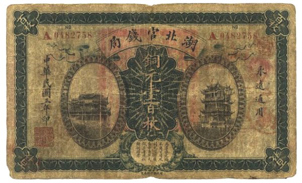
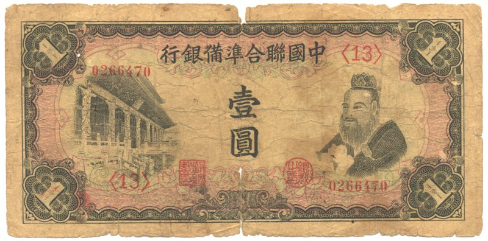

Paper Currency History
- China Made Paper Currency
- Paper money was made by the Tang Dynasty in China in 740 B.C. They made the paper money as an offshoot of the invention of block printing. Block printing is like stamping. Some people used the process for quilts, but the government made ready use of it in printing money. They made paper money because their devalued coins were becoming too heavy to carry.Before the Tang invention there were many other ways to buy things. Bartering, for example, was a direct but cumbersome exchange of personal goods like crops. Seashells, in some places and times have been exchanged in the same way as coins. Wampum was a string of beads made of shells and used for money by American Indians. Gold and other precious metals and stones have been used in much the same way as coins, but with unpredictable value. Coins benefitted trade by providing a relatively consistent, reliable and predictable value.

Ancient Chinese paper currency

Ancient Chinese paper currency
- USA Made Paper Currency
- The U.S. Department of the Treasury first issued paper U.S. currency in 1862 to make up for the shortage of coins and to finance the Civil War. There was a shortage of coins because people had started hoarding them; the uncertainty caused by the war had made the value of items fluctuate drastically.Department of the Treasury first issued paper U.S. currency in 1862 to make up for the shortage of coins and to finance the Civil War. There was a shortage of coins because people had started hoarding them; the uncertainty caused by the war had made the value of items fluctuate drastically. Because coins were made of gold and silver their value didn't change much, so people wanted to hang onto them rather than buy items that might lose their value.The first paper notes were printed in denominations of 1 cent, 5 cents, 25 cents, and 50 cents.That depends on the denomination of the note. A $1 bill lasts 18 months; $5 bill, two years; $10 bill, three years; $20 bill, four years; and $50 and $100 bills, nine years. Bills that get worn out from everyday use are taken out of circulation and replaced.That would depend on the denomination of the bills you use. Since there are 490 notes in a pound, if you used $1 bills it would weigh 2,040.8 pounds, but if you used $100 bills it would weigh only 20.4 pounds.